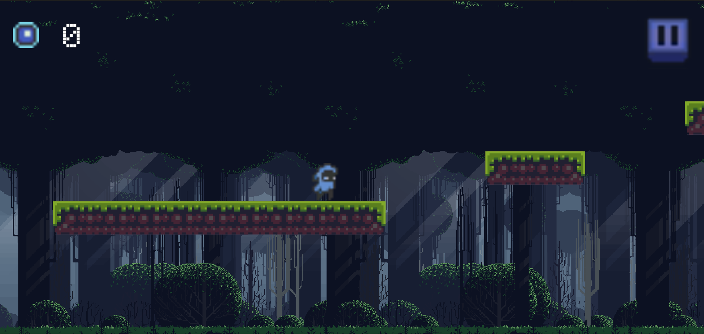

Platformer 2D
Technical details
Engine: Unity
Version: 2020.3.30f1
Genre: Platformer
Assets: Free from Unity Marketplace
Description
The game was created alone by me. I have tried to make it accessible for mobile devices as well. Which was an interesting experience using Apple device. I tried to polish it a bit, so the feeling is better than the pure mechanics game. There are sounds animation, pause menu. One thing that is not shown in the code below is delay in destroying objects related to the animation of death / collect. Other interesting parts are below.
Enemy Platform Boundaries

GIF shows how the enemy moves on platform. He can be placed on any platform and will move from one side to another. It was achieved by checking whether there is nothing below the enemy. If there is nothing, the enemy changes direction. Below is the code responsible for that.
void CheckPlatformBoundaries()
{
Vector3 raycastDir = (moveLeft) ? Vector3.left : Vector3.right;
RaycastHit2D hit = Physics2D.Raycast(transform.position + 0.1f * raycastDir + new Vector3(0f, -0.5f, 0f), -Vector2.up, 2f);
if (hit.collider == null)
{
moveLeft = !moveLeft;
spriteRenderer.flipX = moveLeft;
}
}Player & background movement

Here when the player moves the background moves as well. It is done by moving the background in the opposite direction to the player. But each part moves in the different way. Script for both of them is presented below.
void Update() // In background script
{
if (Input.GetKey(KeyCode.A) || movementLeft)
{
x = transform.position.x;
x += -speed * Time.deltaTime;
transform.position = new Vector3 (x, transform.position.y, transform.position.z);
if (x >= PontoOriginal)
{
x = PontoDeDestino;
transform.position = new Vector3 (x, transform.position.y, transform.position.z);
}
}
else if (Input.GetKey(KeyCode.D) || movementRight)
{
x = transform.position.x;
x += speed * Time.deltaTime;
transform.position = new Vector3 (x, transform.position.y, transform.position.z);
if (x <= PontoDeDestino)
{
x = PontoOriginal;
transform.position = new Vector3 (x, transform.position.y, transform.position.z);
}
}
}Player part, which handles the mobile devices as well as PC, here the movementLeft & movementRight are booleans that are set depending on buttons pressed on phone screen:
public void Move() // In player script
{
if (!canMove)
{
return;
}
if (Input.GetKey(KeyCode.A) || movementLeft)
{
transform.Translate(speed * Time.deltaTime, 0f, 0f);
}
else if (Input.GetKey(KeyCode.D) || movementRight)
{
transform.Translate(-speed * Time.deltaTime, 0f, 0f);
}
}Key takeouts
As platformer like this allows you to implement simple mechanics, I also focused on animations and transitions between them, adding sounds and interactive background. All of this combined together provides a good experience for the player. After this project I feel more confident and comfortable with Animation and Transitions between them. I already have used that knowledge in other projects. Another things is simple AI that can be easily reused - the enemies that are moving on the platforms. Next things I tried was support for mobile devices - adding buttons and being able to control it trhogh the phone - but I am not confident with this yet. Last thing is pause menu. It has shown me how to properly stop the game and resume it.